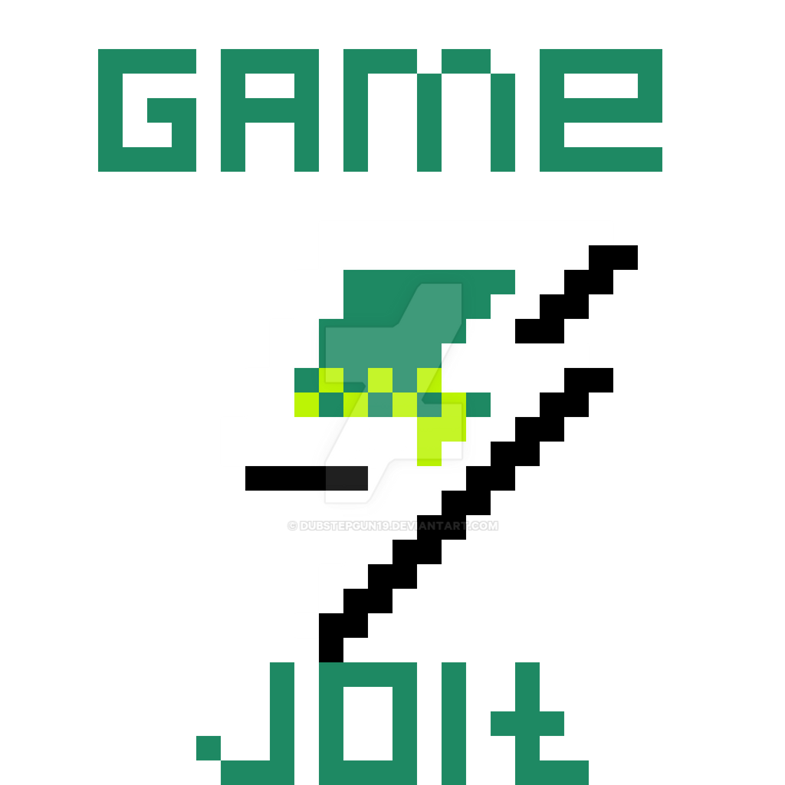

Version Cache for Roark's Attack on Titan Fan Game
Windows
Linux
Mac
If you have a version that's not here, please send it to
Comrade Matt#2623
on Discord

RAoT Game Jolt Page
RAoT itch.io Page
RAoT Discord Server
No Gas Discord Server